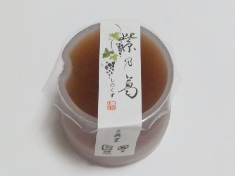
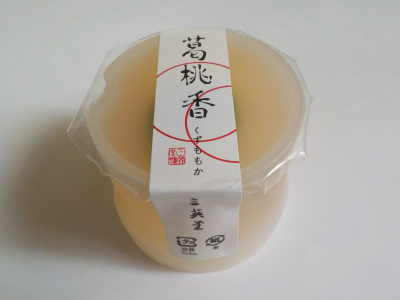

三英堂の紫乃葛（しのくず）は葡萄味がとっても美味しい。
更新日 : 2026/09/07

島根ワイナリーのぶどうジュースが葛で固めてあります。
元々のぶどうジュースが美味しいので、これもとっても美味しいです。
スッキリとした味わいで、夏菓子らしく食べやすいです。
見た目もいいので、お客さんにも出しやすいですね。
島根県出雲市今市町87
更新日 : 2026/09/07

島根ワイナリーのぶどうジュースが葛で固めてあります。
元々のぶどうジュースが美味しいので、これもとっても美味しいです。
スッキリとした味わいで、夏菓子らしく食べやすいです。
見た目もいいので、お客さんにも出しやすいですね。
更新日 : 2021/09/25

やさしい感じの桃のお菓子でした。葛なので味がマイルドになるのかな。
スッキリした甘さで美味しかったです。
真ん中には若桃の甘露煮が入っています。小さい桃の甘露煮って初めて食べたかも。
桃の小さいのって摘果で捨ててたんですけど、食べれるんですね。今度丁度大きさのいいものがあったら甘露煮を作ろうと思いました。